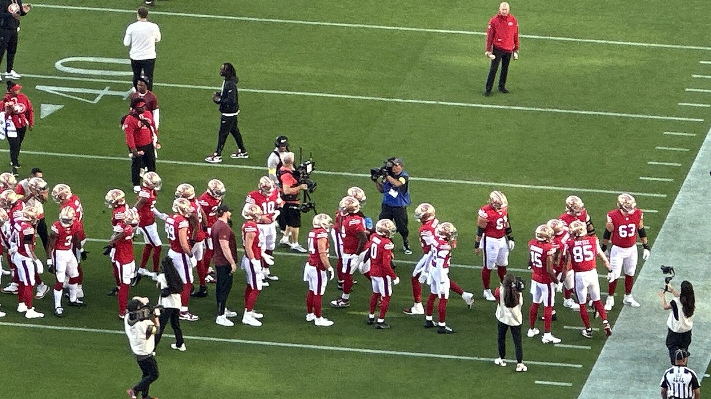
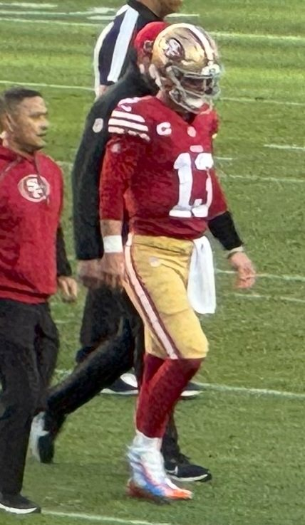
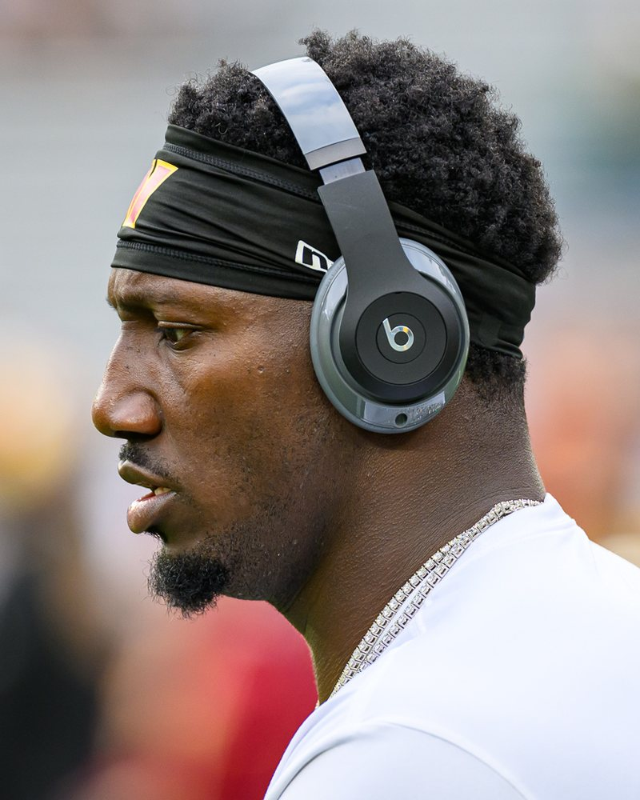

49ers 46, Cowboys 40: Purdy, McCaffrey, Deebo Win a Shootout
584 yards, a career day for Purdy, 223 for Christian, two scores for Deebo, and a fourth quarter that took a year off my life. We're 8 and 1.

Forty six points. In Dallas. On a Sunday. I'm still a little hoarse.
I watched this one on my couch with the volume way too high, and somewhere in the third quarter my neighbor texted me "you good?" because apparently you can hear me through the wall. I was good. I was better than good. I was watching Deebo Samuel run 70 yards untouched on a reverse in his first game back from a hamstring, and I'd stopped caring who heard.
584 yards of offense. Zero turnovers. One gray hair, minimum.
This was a real shootout, the old school kind, where you stop believing any lead is safe and start doing math on every possession. Dak threw five touchdown passes. Five! George Pickens caught three of them and ran around our secondary like it owed him money. And we still won, because the 49ers offense was better than theirs for about 55 minutes and then good enough for the last five.
That place was ours, too. It was a sellout, more than 93,000 people, and Kyle said the crowd was so far on our side that they quit using silent counts after the first drive. In Dallas. Let that sink in for a second, Jerry.
The numbers Dallas is going to have to live with
Five hundred eighty four yards is the fifth most in the history of the San Francisco 49ers. I'll say that one again for the people in the back, because this franchise has had Montana, Young, Rice, Owens and Kittle, and this offense just put up a top five number in Texas. On the other side, it's the third most yards the Cowboys have ever given up in their whole franchise history. Sixty plus seasons of football and only twice has anybody done more to them.
We ran for 214. We threw for 370 after the sacks. Eleven penalties for 100 yards, which is ugly, and I'm choosing to ignore it today.
Every score, in order, because I made a list while it was happening
Brandon Aubrey from 52. Cowboys 3, us 0. Of course he hits from 52. He always hits from 52.
Purdy to Deebo for 11. Deebo's first touch of the day in the end zone and he's back, just like that. 7 to 3.
Dak to Pickens for 35. 10 to 7 Dallas. First Pickens touchdown. Wouldn't be the last.
Eddy Pineiro from 28 to tie it. Keenan Allen had three catches for 47 yards on that drive, in his first game in red and gold, against the same Cowboys he'd faced with the Colts one week earlier.
Pickens again, 39 yards. Aubrey misses the extra point and I cheer a missed kick like it's a pick six. 16 to 10 Dallas.
Purdy to Christian, 74 yards, the longest touchdown of McCaffrey's career. 17 to 16 us, and we never trailed again.
Kaelon Black, 25 yard run, first drive of the second half. 24 to 16.
Aubrey from 52 again. 24 to 19. I'd like that man to retire.
The reverse. Black takes it, flips it to Deebo, and Deebo goes 70 yards while I go from sitting to standing on the couch cushion. 31 to 19.
Christian from 16 out on the ground. 38 to 19. I said "game over" out loud. Never say it out loud.
Dak to Pickens from 5, his third. Two point try fails. 38 to 25.
Dak to Ryan Flournoy for 11. 38 to 32 and now I'm pacing the hallway.
Nineteen seconds later. Purdy to Christian, 66 yards, plus a two point conversion. 46 to 32. That's the one I'm watching on loop tonight.
Dak to CeeDee Lamb from a yard, and they run in the two. 46 to 40. Forty three seconds of me not breathing, and then it was over.
Brock Purdy just made his MVP case for him

Twenty two of 28. 389 yards, the most he's ever thrown for in a game. Three touchdowns, no picks, a 154.5 passer rating. He averaged almost 14 yards every time he threw the ball. Game managers don't do that. He took Dallas' lunch money and ate it in front of them.
I've spent three years arguing with people about this guy. Mr. Irrelevant. System quarterback. Kyle's offense does the work. I'm tired, and honestly I don't have to argue anymore, because the season's arguing for me now:
Second time in about fifteen years we've been 8 and 1, and the last time was 2019, and you remember where that team ended up.
2,369 yards, 70.1 percent completions, 9.0 yards an attempt. He's taking shots and he isn't giving the ball away.
He's had three games this year with a rating over 130: 133.8 against Arizona, 149.1 against Miami and now 154.5 in Dallas. MVP voters love a quarterback who wins big games on the road. This was a big game on the road, and he won it throwing.
The play everybody's going to show you is the 74 yarder. Purdy said afterward he wasn't even planning on throwing it there, then "all of a sudden I just felt Christian pop. So, I stopped and got him the ball." That's the whole thing about him, right there. He feels it. Kyle called it "making the play better than the one we called," and that's a coach who's run out of ways to say his quarterback is really, really good.
Is he the MVP right now? I'm a homer and I know it. I'm also not wrong. Put the numbers up next to anybody's and tell me with a straight face this guy's a game manager. I'll wait.
Christian McCaffrey played backyard football and won
Thirteen carries for 62 and a touchdown on the ground. Then four catches. Four! For 161 yards and two more touchdowns. That's the most receiving yards he's ever had in a game, and he's caught a lot of footballs in his life. 223 yards from scrimmage, three scores.
"Just some backyard football," he said. Sure, Christian. In my backyard nobody runs 66 yards with three minutes left to stop a comeback in the other team's building. Kittle said seeing 23 just run free is a really fun thing, and George, buddy, you're not the only one. I've got the clip saved to my phone already.
Deebo's back and he wanted everybody to know

He'd missed three games with the hamstring. Three catches for 31 and a touchdown, three carries for 78 and a touchdown, 109 total yards. The 11 yard catch got us on the board. The 70 yard reverse broke Dallas' back. When Deebo's healthy, this offense has a guy who turns a trick play into six points, and I've missed him more than I'll admit.
Big shout to Kaelon Black too. Eleven carries, 53 yards, the 25 yard touchdown to open the half, and he's the one who handed off to Deebo on the reverse. Second touchdown of his career. Learn the name.
The part I'm not going to pretend didn't happen
Up 38 to 19 with eleven and a half minutes left and we let them score 21 in the fourth quarter. Dak finished 30 of 51 for 343. Pickens had 11 catches for 145. We lost Renardo Green with his back in the second half and the secondary got thin, and it showed. They were 4 for 5 on fourth down. If that's a 10 minute quarter instead of a 15, I'm a lot calmer about it.
I'll be mad about that tomorrow. Today I'm 8 and 1, we've beaten Dallas five straight times, and the Cowboys are 4 and 6 with their head coach saying the second half was unacceptable. His second half. Not ours.
Next up, the team heads to Colorado Springs for altitude work and then Mexico City for the Vikings, who are 7 and 2 and just picked up Kirk Cousins. That's a real game. So was this one. Bring it.
Last week's win is in our Raiders takeaways, every date left is on the 49ers schedule hub, and if you're keeping track of who's banged up, the 49ers injury report has it. If you want the long version of my Purdy argument, it's on his career passer rating page. And yes, I wrote about the Keenan Allen trade too. Sixth round pick. Five catches in his first game. Thank you, Indianapolis.
More coverage: 49ers · Bay Area NFL · Bay Area Sports Blog home